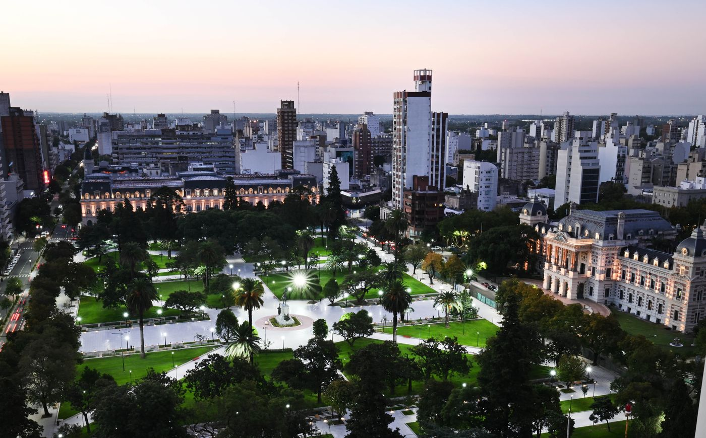

Microcentro

El corazón mismo de Mar del Plata late alrededor de la Plaza San Martín y el centro cívico, financiero y comercial de la ciudad.
La peatonal San Martín y la calle Rivadavia desde Av. Independencia hasta Boulevard Marítimo Patricio Peralta Ramos son las estrellas de esta tradicional zona. Aquí podés encontrar comercios de diversos rubros, bancos, casas de cambio, ferias de artesanos, propuestas gastronomicas, shoppings con salas de cine ¡y mucho más!
En la Plaza San Martín se realiza todas las vacaciones de invierno la Feria de las Colectividades, donde se venden distintas comidas y se realizan espectáculos sobre cada uno de los países que ese año organizan la feria.